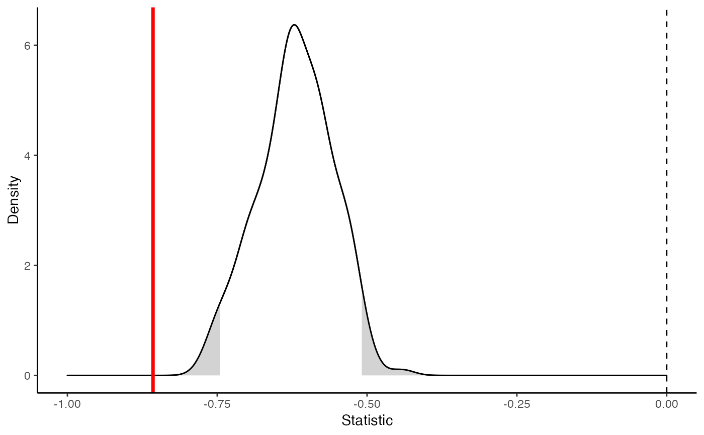
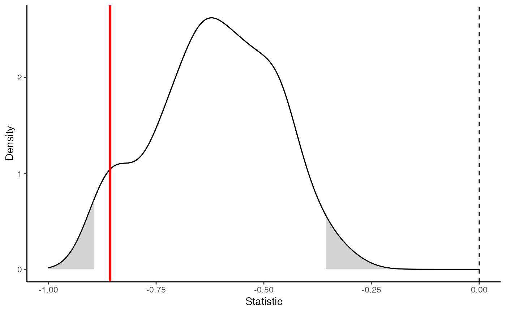

These functions conduct conditional uniform graph (CUG) or permutation (QAP) tests of any graph-level statistic.
test_random(
object,
FUN,
...,
times = 1000,
strategy = "sequential",
verbose = FALSE
)
test_permutation(
object,
FUN,
...,
times = 1000,
strategy = "sequential",
verbose = FALSE
)An object of a migraph-consistent class:
matrix (adjacency or incidence) from {base} R
edgelist, a data frame from {base} R or tibble from {tibble}
igraph, from the {igraph} package
network, from the {network} package
tbl_graph, from the {tidygraph} package
A graph-level statistic function to test.
Additional arguments to be passed on to FUN, e.g. the name of the attribute.
Integer indicating number of simulations used for quantile estimation.
(Relevant to the null hypothesis test only -
the analysis itself is unaffected by this parameter.)
Note that, as for all Monte Carlo procedures, convergence is slower for more
extreme quantiles.
By default, times=1000.
1,000 - 10,000 repetitions recommended for publication-ready results.
If {furrr} is installed,
then multiple cores can be used to accelerate the function.
By default "sequential",
but if multiple cores available,
then "multisession" or "multicore" may be useful.
Generally this is useful only when times > 1000.
See {furrr} for more.
Whether the function should report on its progress.
By default FALSE.
See {progressr} for more.
test_random(): Returns test results for some measure on an object
against a distribution of measures on random networks of the same dimensions
test_permutation(): Returns test results for some measure on an object
against a distribution of measures on permutations of the original network
Other models:
play,
regression
marvel_friends <- to_unsigned(ison_marvel_relationships)
marvel_friends <- to_giant(marvel_friends) %>%
to_subgraph(PowerOrigin == "Human")
(cugtest <- test_random(marvel_friends, network_homophily, attribute = "Attractive",
times = 200))
#>
#> CUG Test Results
#>
#> Observed Value: -0.8571429
#> Pr(X>=Obs): 1
#> Pr(X<=Obs): 0
#>
plot(cugtest)

(qaptest <- test_permutation(marvel_friends,
network_homophily, attribute = "Attractive",
times = 200))
#>
#> QAP Test Results
#>
#> Observed Value: -0.8571429
#> Pr(X>=Obs): 0.965
#> Pr(X<=Obs): 0.07
#>
plot(qaptest)
